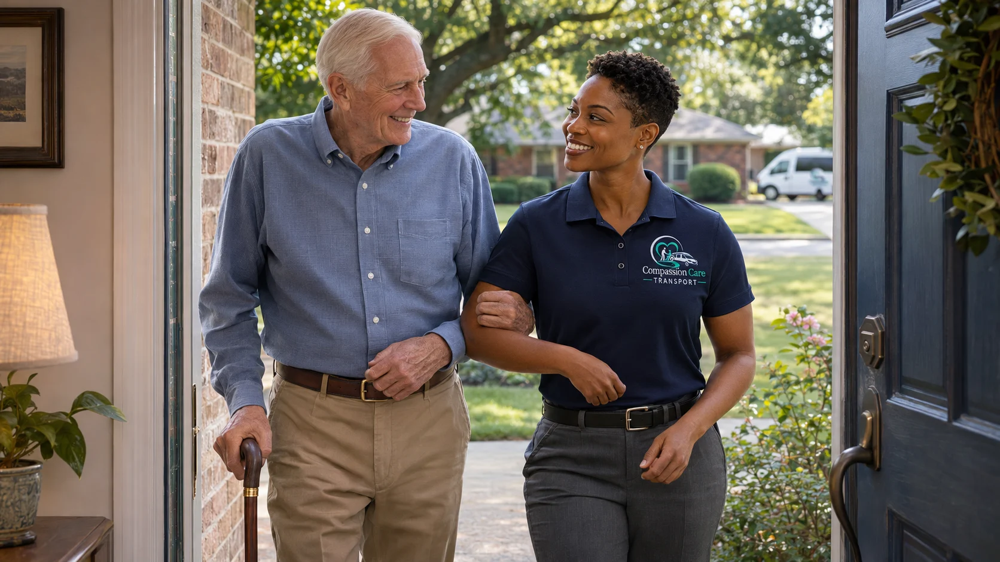
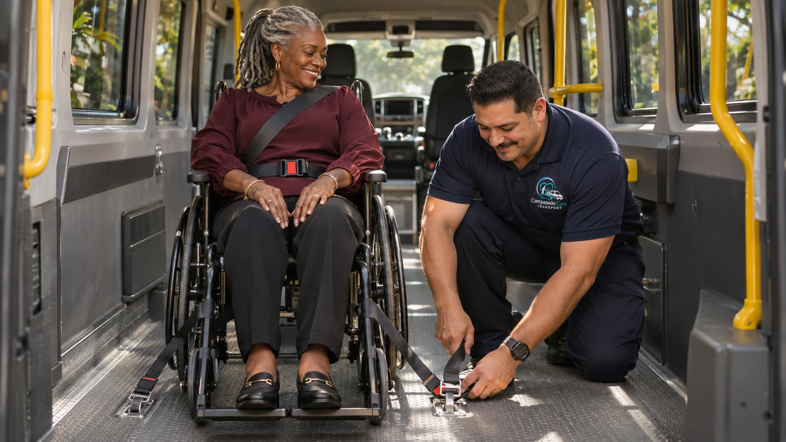
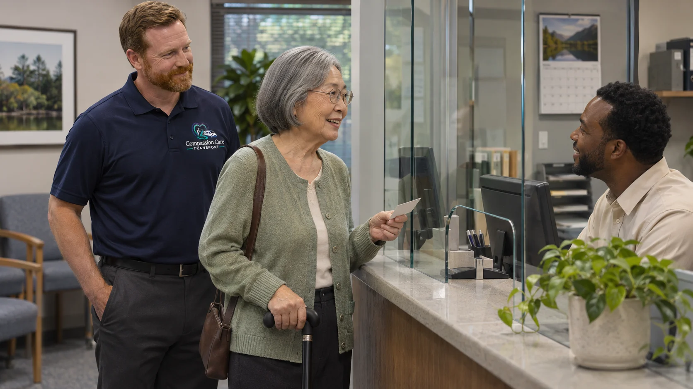
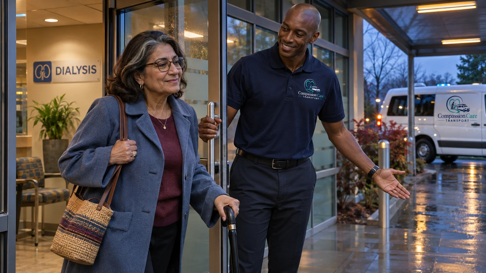
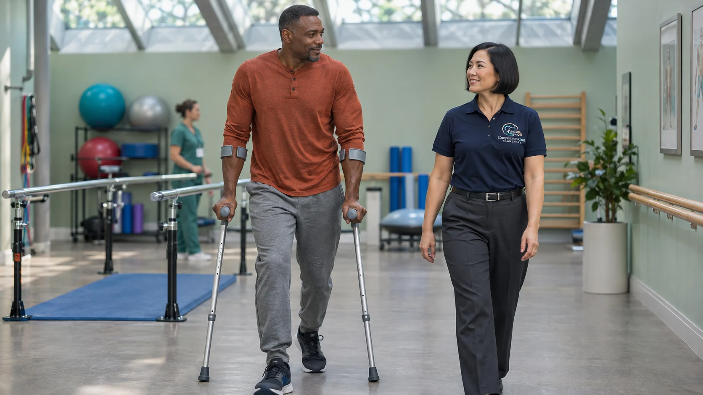
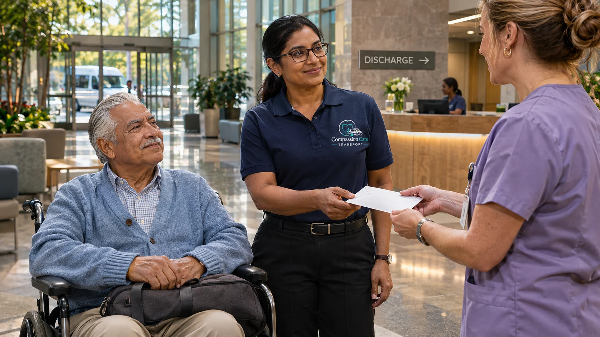
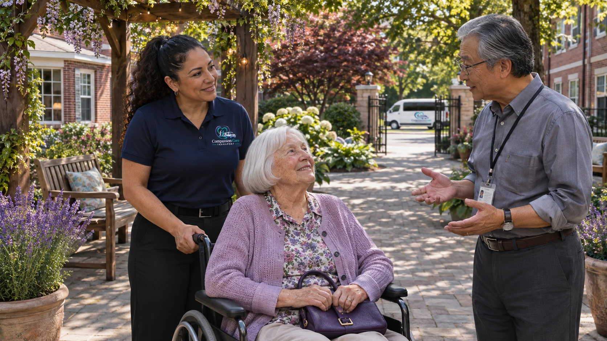
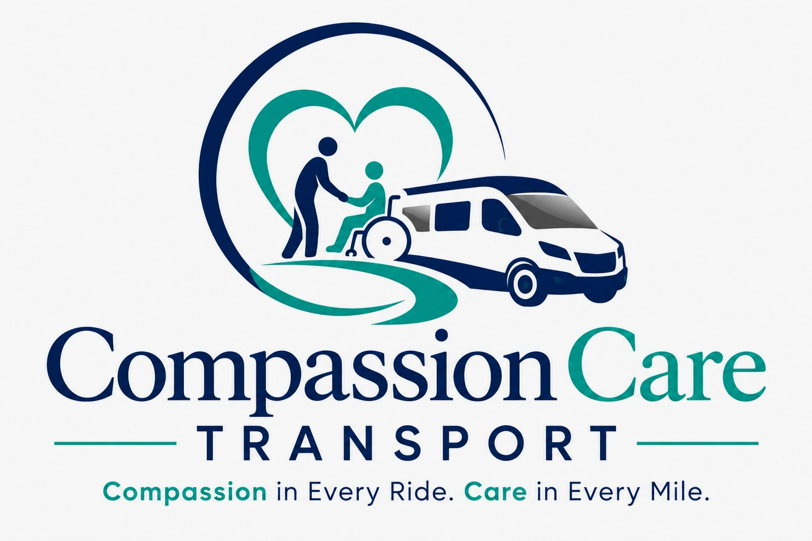

Ambulatory transportation
COMPASSION CARE TRANSPORT
Non-emergency medical transportation.
SUPPORT FOR YOUR MOBILITY



CARE BETWEEN DESTINATIONS





Compassion in Every Ride. Care in Every Mile.
214-566-3869 · Compassioncaretransport@yahoo.com